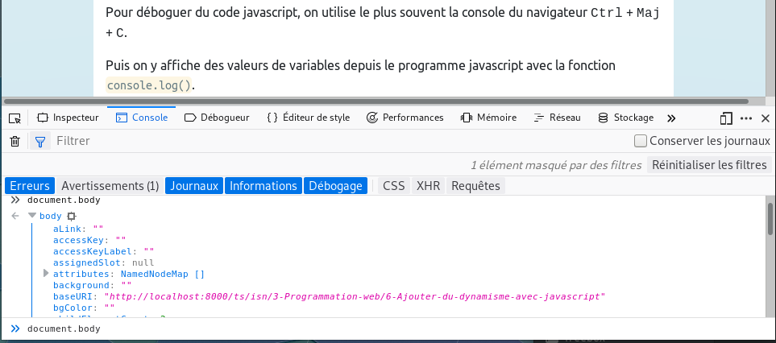

Programme Officiel
| Contenus | Capacités attendues | Commentaires |
|---|---|---|
Modalités de l’interaction entre l’homme et la machine Événements |
Identifier les différents composants graphiques permettant d’interagir avec une application Web Identifier les événements que les fonctions associées aux différents composants graphiques sont capables de traiter |
Il s’agit d’examiner le code HTML d’une page comprenant des composants graphiques et de distinguer ce qui relève de la description des composants graphiques en HTML de leur comportement (réaction aux événements) programmé par exemple en JavaScript. |
Le javascript a été créé en 1995 par Brendan Eich, il est utilisé pour programmer le navigateur côté client. Attention à ne pas confondre le javascript et le java, ce sont des langages différents.
Intégration de code javascript dans une page html
Le code javascript peut être intégré à un document html grâce à la balise <script>.
Les fichiers javascript utilisent l’extension .js que l’on importe en précisant son URI grâce à l’attribut src.
<script src="script.js"></script>
Remarque: Bien qu’il soit recommandé de placer la balise <script> dans le <head> du document, il est très fréquent de voir le javascript placé juste avant la balise fermante <body>. Ceci permet d’être sûr que l’ensemble de la page web ait été parsée(analysée) par le navigateur avant de la modifier avec le code javascript.
Intégrer le `javascript` directement dans la page `html`
<!DOCTYPE html>
<html lang="fr">
<head>
<meta charset="utf-8" />
<title>Un peu de javascript</title>
</head>
<body>
<h1>Titre principal de mon document</h1>
<p>
Regarde maman, je suis en train d'ajouter du code `javascript` à ma page.
</p>
<script type="text/javascript" charset="utf-8">
// Je suis un commentaire javascript!
// Alert crée une fenêtre d'affichage sur l'écran pour l'utilisateur
alert('Hello world !') // L'affichage alert est un peu vieillot
// console.log() écrit dans la console du navigateur pour le développeur
console.log('Script Hello world exécuté.')
</script>
</body>
</html>
Débogage du javascript
Pour déboguer du code javascript, on utilise le plus souvent la console du navigateur( Ctrl + Maj + I). Puis on y affiche des valeurs de variables depuis le programme javascript avec la fonction console.log().

Syntaxe du javascript
Voici quelques bases de sa syntaxe, vous pouvez trouver un comparatif avec Python dans la page Comparaison des langages
- Les variables doivent être déclarées grâce au mot clé
var(ouconstetletdans les versions récentes). - Tout comme en python, les chaînes de caractères sont entourées de guillemets simples ou doubles.
- Les instructions simples sont terminées par un point-virgule:
;(il n’est cependant pas toujours indispensable contrairement aucss). - Les blocs d’instructions sont entourés d’accolades.
- Les commentaires sont notés précédés de deux barres obliques:
//. - Les variables et fonctions sont écrites en
camelCase(L’espace est remplacé par une majuscule). - L’indentation des blocs d’instruction n’est pas obligatoire comme en Python, mais souhaitable.
La référence la plus complète et à jour est le site Mozilla Developper Network MDN.
Le chapitre Comparaison de langages permet de faire le lien entre la syntaxe Python et la syntaxe javascript. Voir notamment la syntaxe concernant les fonctions qui sont omniprésentes en javascript.
Interaction au sein d’une page web: les événements
Pour que la page réagisse aux actions de l’utilisateur, on ajoute des EventHandler(gestionnaires d’événements) aux balises html qui doivent exécuter du code javascript en réponse aux événements.
Par exemple, pour exécuter la fonction javascript initFunction lorsque la balise <body> a fini de se charger.
Dans le fichier html:
<body onload="initFunction();">
Dans le fichier js:
function initFunction(){
let now = new Date();
console.log("Page ouverte à " + now.getHours() + "h" + now.getMinutes() );
}
Voici quelques exemples d’événements courants.
EventHandler |
Type d’événement géré |
|---|---|
onclick |
clic de la souris sur l’élément |
ondblclick |
double-clic de la souris sur l’élément |
onkeypress |
appuie sur une touche du clavier |
onkeyup |
touche de clavier relâchée |
onselect |
élément sélectionné |
La liste complète des GlobalEventHandlers sur MDN
HTML → JS: Comment récupérer une entrée utilisateur ?
La balise html <input> permet de récupérer les entrées utilisateur, il en existe de divers types:
<input type="text" ...: Par défaut: entrée de texte.<input type="button" ...: Un bouton(on préfèrera cependant la balise<button>).<input type="checkbox" ...: Case à cocher.<input type="radio" ...: un bouton radio qui permet de sélectionner une seule valeur parmi un groupe de différentes valeurs.
Voici un exemple complet qui affiche la valeur tapée par l’utilisateur lorsqu’on clique sur un bouton.
[Événements en javascript](embedded-codesandbox://evenements-javascript)
Si on regarde cet exemple, on voit que pour récupérer une entrée:
Dans le
html, on ajoute unidà la balise input que l’on souhaite récupérer:<input id="mon-input" placeholder="Taper votre texte ici" />
Dans le
js, on accède à la valeur entrée dans l’élément que l’on affecte à une variable.// On récupère le texte dans la balise input var texte = document.querySelector(`#mon-input`).value // On l'affiche dans la console console.log(texte)
Il est également possible de récupérer une entrée utilisateur avec la fonction prompt()
var rep = prompt("Voulez-vous accéder à cette page ?")
Cependant, cela n’est plus très utilisé de nos jours.
JS → HTML: Comment afficher du texte dynamiquement sur la page?
Exécution différée
Avant de modifier la page, il convient d’attendre que la page html soit chargée avant d’exécuter le code javascript. De nombreux développeurs placent le code javascript à la fin du corps du document avant la balise fermante </body>.
Cependant, il est aussi possible et recommandé de lancer le code javascript qu’après le chargement de la fenêtre en plaçant le code dans une fonction qui s’exécute après le chargement de la page:
window.onload = function() {
// code javascript à exécuter
// après le chargement de la page
console.log('La page est chargée, je peux maintenant la modifier')
}
Accéder à un élément html
Pour accéder à un élément html à partir du javascript, on utilise la fonction document.querySelector().
C’est une méthode qui permet de sélectionner les éléments comme en css.
Vous avez un document html qui contient les éléments suivants:
<h1 class="grand-titre">Titre principal de mon document</h1>
<p id="premier-paragraphe">
Regarde maman, je suis en train d'ajouter du code `javascript` à ma page.
</p>
<h2 id="sous-titre">Sous-titre de mon document</h2>
On peut alors en javascript modifier leurs contenus grâce à la propriété innerHTML,
document.querySelector('#premier-paragraphe').innerHTML = "J'aimais pas l'ancien texte, je l'ai changé."
Attention: ne pas oublier de placer ce code dans la fonction window.onload = function() { } ou de placer votre balise <script> à la fin du <body>.
Modifier les styles
Vous pouvez en fait modifier toutes les propriétés des éléments à partir de javascript. Voici par exemple comment modifier les styles grâce à la propriété style.
document.querySelector('h1.grand-titre').style.color = '#FFAA85'
document.querySelector('#grand-titre').style.color = '#AA00AA'
Un exemple complet
Voici un exemple complet qui commence par récupérer une entrée utilisateur(HTML → JS), puis qui modifie la page en fonction de sa réponse(JS → HTML).
[Exemple complet de gestion des événements en javascript](embedded-codesandbox://evenements-javascript-complet)
Pour aller plus loin
Le javascript étant un langage très à la mode, les tutoriels, cours et vidéos ne manquent pas. N’hésitez pas à consulter:
- le cours d’OpenClassroom Apprenez à coder avec JavaScript
- codeacademy
Ou encore les sites de référence comme: